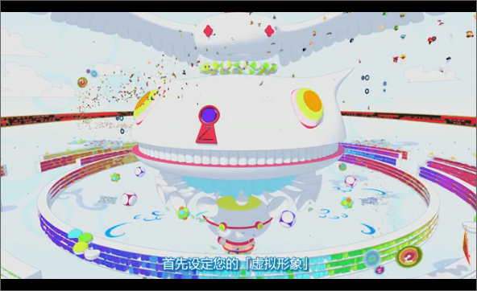

「拜託你，假裝當我的未婚夫四天吧！」
小磯健二受到心儀的學姊筱原夏希拜託，與她一起前往長野縣的鄉村小鎮。
企圖努力達成任務的健二，周旋在以夏希的外曾祖母為中心的眾多親戚之中；
這時，他收到一串神秘的數列。擅長數學的他，興奮的計算出答案，隔天卻世界大亂！
為了拯救世界的危機，健二和夏希以及所有親戚挺身而出！
這是一個教人熱血沸騰，卻又親切溫柔的夏日故事。
电影开场描述的是OZ系统中虚拟信息网络的场景，有点像素风格，跟传统动漫那种细腻唯美的画风完全不一样。也许会想，我勒个去，这是什么鬼？是不是下错片儿了。 我最初也是这样觉得的，慢慢看来，才发现，这部片子就是酱紫。

虚拟和现实 温馨的夏日闹剧
这是两条并行的世界
一个车水马龙，城市笼罩在电车引擎、喇叭、各式各样杂音之下。
一个奇幻虚拟，蔚蓝的天空下住着不计其数俏皮的公民。它们依托互联网而存在，又与外在世界有着神经末梢般复杂的联系。
依旧是和往日任何挥汗如雨的夏天一样，已经在物理社打工的健二，本来以为，这个暑假会平凡不堪、毫无意义。可谁也没想到，因为夏希学姐的闯入，自己稀里糊涂地被拉进了乡村小镇的一个百年大家庭里。

老实说，看电影版夏日大作战的时候，就有一种很清新的感觉。
在夏末这个绿意盎然的日本乡村，没有了林立的高楼外墙玻璃反射出来的刺眼光芒，取而代之的是蔓延的绿意和蝉鸣。
这个热热闹闹、充满喜感的一大家子人，竟然很奇妙地来了个电玩大作战，甚至在泪水、汗水中有些离奇地拯救了世界。友情、亲情、爱情水乳交融。一大家子人，加入OZ世界热血地战斗，甚至还可以爆笑又紧张地用花牌拯救世界。
健二的夏天，陪伴着夏希学姐经历了亲人离合的悲欢，温馨、感动、悲伤、愉悦，读起来，心情就仿佛坐上了春日里的过山车，紧张、刺激，但又无比温暖。

按理说，本片的女主是夏希。不过，我觉得，作为这个家族的核心骨，祖母的光环更胜一筹。
故事的大背景就是这个年迈开朗知理善良的祖母大寿之喜。祖母作为家族的核心，将家族的每个成员紧密和谐的联系在一起。
夏希祖母和健二的对话，起初只是让人觉得这个让缅甸的健二脸红到变成关公的老祖母是个封建固执的老人家。然而当故事越往后发展，越让人体会到老祖母的慈爱、坚强、宽容……特别是当黑客入侵OZ系统，让现实时间一片混乱的时候，老祖母毅然挺身而出，发动身边的老朋友力挽狂澜于即倒。她武士一般这样坚强的黄金配角形象立刻跃然纸上啊。就如有人说说：你可以软弱卑微，可以不是个有多优秀的人。可是只要你在她的身边，你仿佛就能获得力量和救赎。这力量会指引你前进的方向。我们能在这里能体会到的，就是这股家庭的力量，爱的力量吧。
她死后被夏希发现的那封信的内容让人回味无穷。“…还有，如果宅住回来的话，虽然十年前离家不知什么时候回来，但回来的时候肯定饥肠辘辘，让他尽情的吃田里种的蔬菜、葡萄还有梨，我一直记得第一次见到那孩子的情景…”她是个宽厚的老人，家中二十几口人都信服她，宅住叔叔也把她当作最亲的亲人，只是还来不及表达。
男主人公健二是害羞属性，头脑很好却没什么自信。因为经常一个人生活，很少与家人相处，刚刚来到夏希家很不适应，当夏希向奶奶介绍他时还一个劲地抓自己的后脑勺，后来很喜欢夏希的家人，最后和夏希的家人齐心协力化解了危机。
加主马是剧中比较重要的一个男性角色，有些自闭的一个小孩，头发把一只眼睛挡住了，很少与家人一起活动，爱坐在电脑前，因为小时候被人欺负，所以学习了格斗技巧，并且是OZ世界擂台赛的冠军。在虚拟世界中他与LOVE MECHINE的打斗比较多。故事最后有个情节是他害羞地摸妈妈肚中的妹妹，说明他前后发生了改变。
宅住叔叔，一个不羁的男人，携带了家产逃跑，东京大学毕业，美国留学，人工智能方面的专家。他设计的LOVE MECHINE被美国军部偷偷使用，被家人误会了也不解释，他其实非常喜欢祖奶奶，从美国赶回来也是为了给祖奶奶贺寿，制作LOVE MECHINE也是为了把它卖掉把钱还给祖奶奶。
喜欢这部片子，是因为喜欢这个设定：老家。喜欢一个人，就应该去他的老家看看。看看他走过的路，看看他住过的房子，看看他家里的人，甚至看看他成长的这些过程。你的过去我不曾参与，但是我想知道那每一点每一滴。你的未来我会奉陪到底，我会珍惜拥有的每一分每一秒。